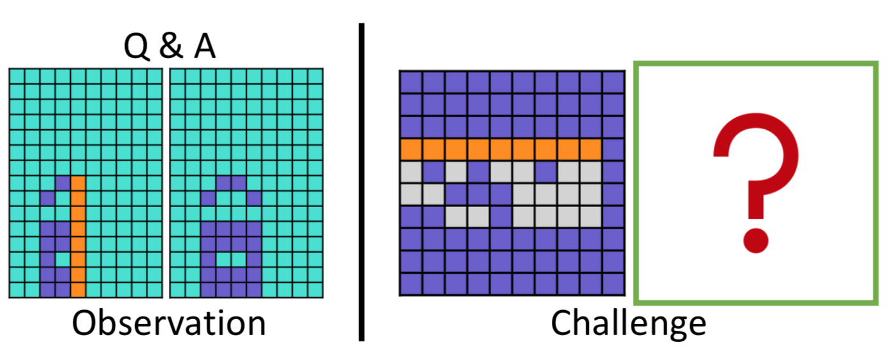
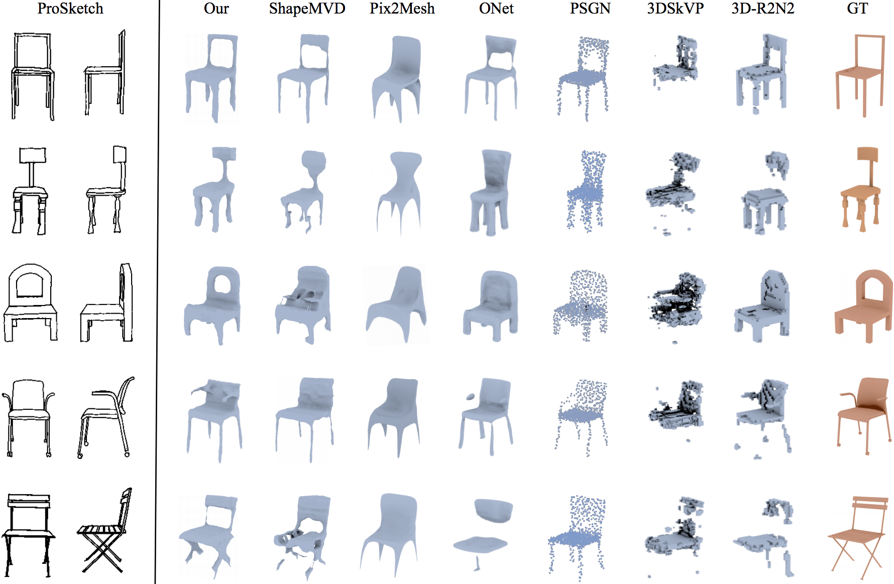
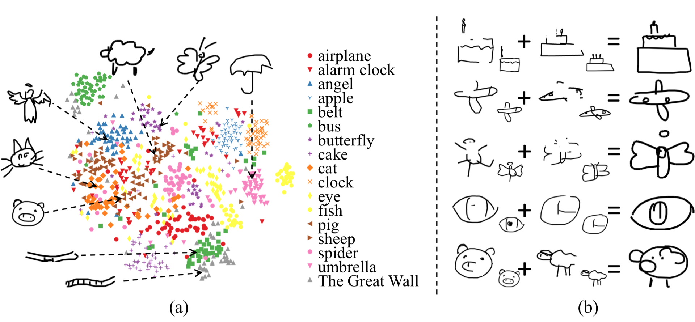
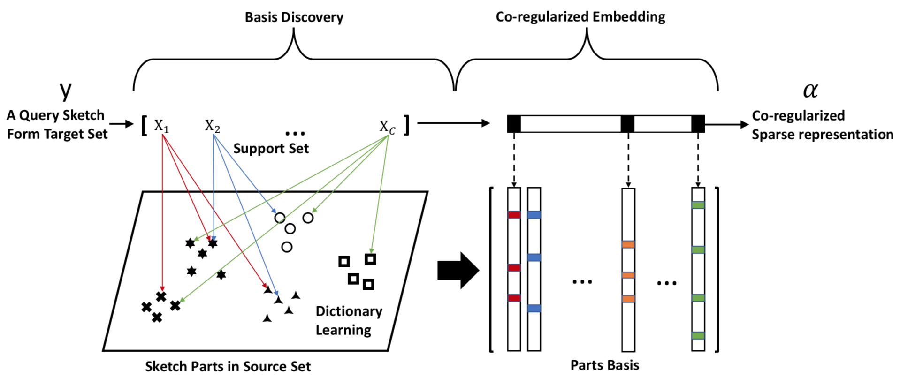
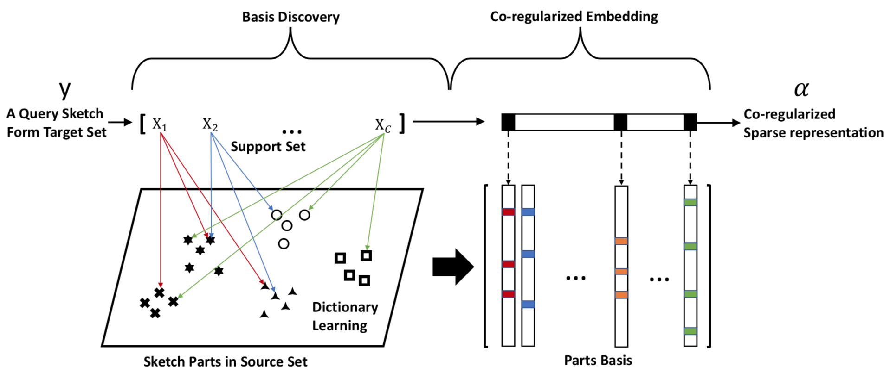

Lecturer
(Assistant Professor)
Beijing University of Posts and Telecommunications, Beijing, Chinaqiyg AT bupt DOT edu DOT cn
I am currently an assistant professor at BUPT. Previously, I was a PhD student at Pattern Recognition and Intelligent Systems (PRIS) laboratory at BUPT. I received the PhD in Signal Processing from Beijing University of Posts and Telecommunications (BUPT) in 2015 (Supervisor: Professor Jun Guo). From 2019 to 2020, I was a visiting scholar at SketchX lab headed by Dr. Yi-Zhe Song at the Centre for Vision Speech and Signal Processing (CVSSP) in University of Surrey. I also worked as a guest PhD at Aalborg University in Denmark in 2013 and a visiting researcher at Sun Yat-sen University in China in 2014.
My research interests include perceptual grouping, and sketch-based machine vision algorithms and tasks, such as sketch-based image retrieval (SBIR), sketch recognition, sketch generation and language-based sketch understanding.
News
Selected Publications
*: equal contribution
2021

PQA: Perceptual Question Answering
Yonggang Qi*, Kai Zhang*, Aneeshan Sain and Yi-Zhe Song.
IEEE Conference on Computer Vision and Pattern Recognition (CVPR), 2021.
2020

Towards Practical Sketch-based 3D Shape Generation: The Role of Professional Sketches
Yue Zhong, Yonggang Qi, Yulia Gryaditskaya, Honggang Zhang, and Yi-Zhe Song.
IEEE Transactions on Circuits and Systems for Video Technology (TCSVT)

SketchHealer: A Graph-to-Sequence Network for Recreating Partial Human Sketches
Guoyao Su, Yonggang Qi, Kaiyue Pang, Jie Yang and Yi-Zhe Song.
The 31st British Machine Vision Virtual Conference (BMVC2020)
Oral Presentation, 5% acceptance rate
 S3NET: Graph Representational Network For Sketch Recognition
Lan Yang, Aneeshan Sain, Linpeng Li, Yonggang Qi, Honggang Zhang and Yi-Zhe Song.
2020 IEEE International Conference on Multimedia and Expo (ICME2020)
S3NET: Graph Representational Network For Sketch Recognition
Lan Yang, Aneeshan Sain, Linpeng Li, Yonggang Qi, Honggang Zhang and Yi-Zhe Song.
2020 IEEE International Conference on Multimedia and Expo (ICME2020)
 Improved Traffic Sign Detection In Videos Through Reasoning Effective RoI Proposals
Yanting Zhang, Yonggang Qi, Jie Yang and Jenq-Neng Hwang.
2020 IEEE International Conference on Multimedia and Expo (ICME2020)

Sketch Fewer to Recognize More by Learning A Co-regularized Sparse Representation
Yonggang Qi and Yi-Zhe Song.
IEEE Transactions on Circuits and Systems for Video Technology (TCSVT)
Improved Traffic Sign Detection In Videos Through Reasoning Effective RoI Proposals
Yanting Zhang, Yonggang Qi, Jie Yang and Jenq-Neng Hwang.
2020 IEEE International Conference on Multimedia and Expo (ICME2020)

Sketch Fewer to Recognize More by Learning A Co-regularized Sparse Representation
Yonggang Qi and Yi-Zhe Song.
IEEE Transactions on Circuits and Systems for Video Technology (TCSVT)
2016~2019
 Unpaired Image-to-Sketch Translation Network for Sketch Synthesis
Yue Zhang, Guoyao Su, Yonggang Qi and Jie Yang.
IEEE Visual Communications and Image Processing (VCIP), 2019.
Unpaired Image-to-Sketch Translation Network for Sketch Synthesis
Yue Zhang, Guoyao Su, Yonggang Qi and Jie Yang.
IEEE Visual Communications and Image Processing (VCIP), 2019.
 SketchSegNet+: An End-to-End Learning of RNN for Multi-Class Sketch Semantic Segmentation
Yonggang Qi and Zheng-Hua Tan.
IEEE ACCESS.
SketchSegNet+: An End-to-End Learning of RNN for Multi-Class Sketch Semantic Segmentation
Yonggang Qi and Zheng-Hua Tan.
IEEE ACCESS.
 Image Retrieval by Dense Caption Reasoning
Xinru Wei, Yonggang Qi, Jun Liu and Fang Liu.
IEEE Visual Communications and Image Processing (VCIP), 2017. Oral
Image Retrieval by Dense Caption Reasoning
Xinru Wei, Yonggang Qi, Jun Liu and Fang Liu.
IEEE Visual Communications and Image Processing (VCIP), 2017. Oral
 Instance-level Coupled Subspace Learning for Fine-grained Sketch-based Image Retrieval
Peng Xu, Qiyue Yin, Yonggang Qi, Yi-Zhe Song, Zhanyu Ma, Liang Wang and Jun Guo.
European Conference on Computer Vision (ECCV), Workshop on Visual Analysis of Sketches, 2016. Oral
Instance-level Coupled Subspace Learning for Fine-grained Sketch-based Image Retrieval
Peng Xu, Qiyue Yin, Yonggang Qi, Yi-Zhe Song, Zhanyu Ma, Liang Wang and Jun Guo.
European Conference on Computer Vision (ECCV), Workshop on Visual Analysis of Sketches, 2016. Oral
 Sketch-based Image Retrieval via Siamese Convolutional Neural Network
Yonggang Qi, Yi-Zhe Song, Honggang Zhang and Jun Liu.
IEEE International Conference on Image Processing (ICIP), 2016.
Sketch-based Image Retrieval via Siamese Convolutional Neural Network
Yonggang Qi, Yi-Zhe Song, Honggang Zhang and Jun Liu.
IEEE International Conference on Image Processing (ICIP), 2016.
2013~2015
 Making Better Use of Edges via Perceptual Grouping
Yonggang Qi, Yi-Zhe Song, Tao Xiang, Honggang Zhang, Timothy Hospedales, Yi Li and Jun Guo.
IEEE Conference on Computer Vision and Pattern Recognition (CVPR), 2015.
Making Better Use of Edges via Perceptual Grouping
Yonggang Qi, Yi-Zhe Song, Tao Xiang, Honggang Zhang, Timothy Hospedales, Yi Li and Jun Guo.
IEEE Conference on Computer Vision and Pattern Recognition (CVPR), 2015.
 Im2Sketch: Sketch generation by unconflicted perceptual grouping
Yonggang Qi, Jun Guo, Yi-Zhe Song, Tao Xiang, Honggang Zhang and Zheng-Hua Tan.
Neurocomputing
Im2Sketch: Sketch generation by unconflicted perceptual grouping
Yonggang Qi, Jun Guo, Yi-Zhe Song, Tao Xiang, Honggang Zhang and Zheng-Hua Tan.
Neurocomputing
 sketching by perceptual grouping
Yonggang Qi, Jun Guo, Yi Li, Honggang Zhang, Tao Xiang and Yi-Zhe Song.
IEEE International Conference on Image Processing (ICIP), 2013.
sketching by perceptual grouping
Yonggang Qi, Jun Guo, Yi Li, Honggang Zhang, Tao Xiang and Yi-Zhe Song.
IEEE International Conference on Image Processing (ICIP), 2013.